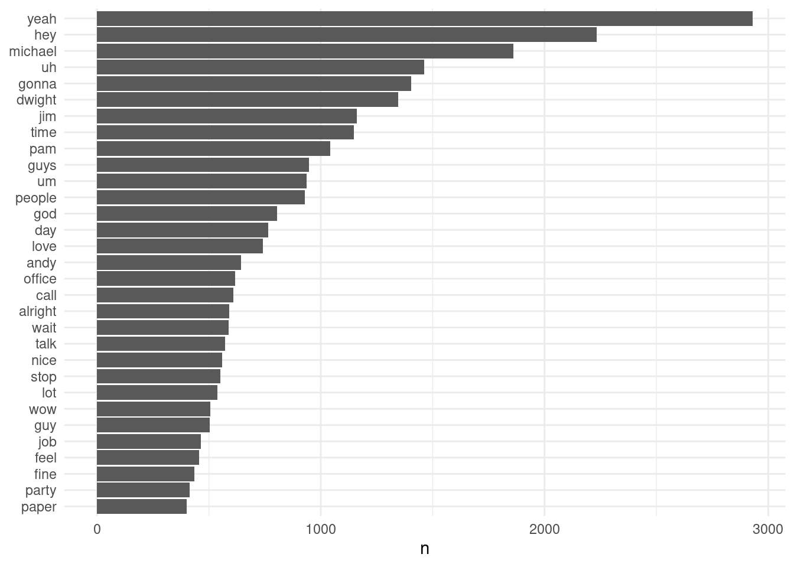

Introducing the schrute Package: the Entire Transcripts From The Office
LinkedIn | Github | Blog | Subscribe

What
This is a package that does/has only one thing: the complete transcriptions of all episodes of The Office! (US version). Schrute package website
Use this data set to master NLP or text analysis. Let’s scratch the surface of the subject with a few examples from the excellent Text Mining with R book, by Julia Silge and David Robinson.
First install the package from CRAN:
There is only one data set with the schrute package; assign it to a variable
mydata <- schrute::theofficeTake a peek at the format:
dplyr::glimpse(mydata)Rows: 55,130
Columns: 12
$ index <int> 1, 2, 3, 4, 5, 6, 7, 8, 9, 10, 11, 12, 13, 14, 15, 16…
$ season <int> 1, 1, 1, 1, 1, 1, 1, 1, 1, 1, 1, 1, 1, 1, 1, 1, 1, 1,…
$ episode <int> 1, 1, 1, 1, 1, 1, 1, 1, 1, 1, 1, 1, 1, 1, 1, 1, 1, 1,…
$ episode_name <chr> "Pilot", "Pilot", "Pilot", "Pilot", "Pilot", "Pilot",…
$ director <chr> "Ken Kwapis", "Ken Kwapis", "Ken Kwapis", "Ken Kwapis…
$ writer <chr> "Ricky Gervais;Stephen Merchant;Greg Daniels", "Ricky…
$ character <chr> "Michael", "Jim", "Michael", "Jim", "Michael", "Micha…
$ text <chr> "All right Jim. Your quarterlies look very good. How …
$ text_w_direction <chr> "All right Jim. Your quarterlies look very good. How …
$ imdb_rating <dbl> 7.6, 7.6, 7.6, 7.6, 7.6, 7.6, 7.6, 7.6, 7.6, 7.6, 7.6…
$ total_votes <int> 3706, 3706, 3706, 3706, 3706, 3706, 3706, 3706, 3706,…
$ air_date <chr> "2005-03-24", "2005-03-24", "2005-03-24", "2005-03-24… mydata %>%
dplyr::filter(season == '01') %>%
dplyr::filter(episode == '01') %>%
dplyr::slice(1:3) %>%
knitr::kable()| index | season | episode | episode_name | director | writer | character | text | text_w_direction | imdb_rating | total_votes | air_date |
|---|
So what we have is the season, episode number and name, character, the line spoken and the line spoken with the stage direction (cue).
We can tokenize all of the lines with a few lines from the tidytext package:
token.mydata <- mydata %>%
tidytext::unnest_tokens(word, text)This increases our data set to 571612 records, where each record contains a word from the script.
token.mydata %>%
dplyr::filter(season == '01') %>%
dplyr::filter(episode == '01') %>%
dplyr::slice(1:3) %>%
knitr::kable()| index | season | episode | episode_name | director | writer | character | text_w_direction | imdb_rating | total_votes | air_date | word |
|---|
If we want to analyze the entire data set, we need to remove some stop words first:
stop_words <- tidytext::stop_words
tidy.token.mydata <- token.mydata %>%
dplyr::anti_join(stop_words, by = "word")And then see what the most common words are:
# A tibble: 18,960 × 2
word n
<chr> <int>
1 yeah 2930
2 hey 2232
3 michael 1860
4 uh 1463
5 gonna 1405
6 dwight 1345
7 jim 1162
8 time 1149
9 pam 1043
10 guys 947
# ℹ 18,950 more rowstidy.token.mydata %>%
dplyr::count(word, sort = TRUE) %>%
dplyr::filter(n > 400) %>%
dplyr::mutate(word = stats::reorder(word, n)) %>%
ggplot2::ggplot(ggplot2::aes(word, n)) +
ggplot2::geom_col() +
ggplot2::xlab(NULL) +
ggplot2::coord_flip() +
ggplot2::theme_minimal()
Feel free to keep going with this. Now that you have the time line (episode, season) and the character for each line and word in the series, you can perform an unlimited number of analyses. Some ideas: - Sentiment by character - Sentiment by character by season - Narcissism by season (ahem.. Nard Dog season 8-9) - Lines by character - Etc.
Want more content like this? Subscribe here